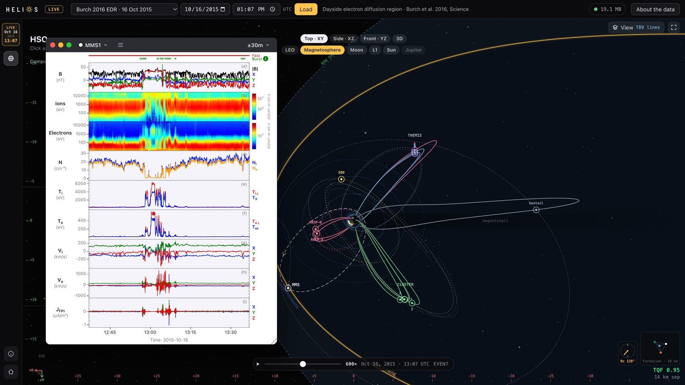

In your browser · nothing to install
Helios Live
Helios's HSO screen at any moment since March 2015. See where each spacecraft was and the magnetopause and bow shock that hour's solar wind set, then click a spacecraft for its data, read straight from the public archives.
MMS · THEMIS · ARTEMIS · Cluster · GOES · ACE · Wind · DSCOVR
Launch Helios LiveOr start at an event: Burch 2016 EDR · Torbert 2018 tail EDR · Mother's Day storm

Helios Live on 16 Oct 2015, 13:07 UTC: the fleet around Earth, and MMS1 at the electron diffusion region of Burch et al. (2016).